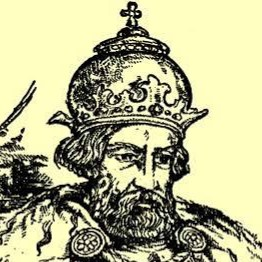
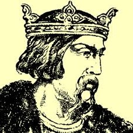
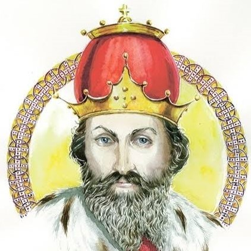

Юго-Западная Русь
Галицко-Волынское княжество располагалось на юго-западе русских земель, в бассейнах Днестра и Буга. Благодаря плодородным почвам и выгодному положению на торговых путях в Европу, это был богатый край. Однако здесь сложилась особенно острая борьба между князьями и местным боярством.
- Даниил Романович (1238–1264 гг.) — получил от папы римского титул «короля Руси».
- Боярство здесь было настолько сильным, что могло изгонять князей и приглашать иностранных правителей.
География и экономика
Княжество граничило на западе с Венгрией и Польшей, на востоке — с Киевским княжеством и половецкой степью. Плодородные чернозёмы и близость к европейским рынкам сделали этот край одним из самых богатых на Руси.
Через Галич и Владимир-Волынский проходил торговый путь из Балтийского моря в Чёрное (по Висле, Западному Бугу и Днестру). Это способствовало развитию торговли и ремёсел. К XIII веку здесь насчитывалось около 80 городов — больше, чем в любой другой земле Руси.
Политическое устройство: князь против бояр
Главная особенность Галицко-Волынской земли — сильная и богатая боярская оппозиция. Местное боярство, опираясь на свои земельные владения, постоянно вмешивалось в политику, свергало неугодных князей и приглашало иностранных правителей (венгерских и польских).
Княжеская власть здесь была ограничена. Князья пытались опереться на горожан и младшую дружину, чтобы сломить сопротивление бояр. Ярославу Осмомыслу и Роману Мстиславичу это удавалось, но после смерти каждого из них боярская смута возобновлялась.
Правители
-

Ярослав Осмомысл (1153–1187 гг.)«Острый умом». Успешно боролся с боярами, воевал с Византией, Венгрией и Польшей. При нём княжество достигло значительного могущества.
-

Роман Мстиславич (1199–1205 гг.)Объединил Галич и Волынь в 1199 г. В 1202 году захватил Киев и принял титул великого князя. Покровительствовал городам и торговле. Погиб в походе.
-

Даниил Романович (1238–1264 гг.)Более 30 лет боролся с боярами и внешними врагами. В 1245 году разбил венгерско-польско-боярское войско под Ярославом и окончательно утвердил свою власть. В 1255 году принял королевскую корону от папы римского. Противостоял монголам, но не смог добиться полной независимости от Орды.
Культура и архитектура
Здесь сохранились уникальные памятники древнерусского зодчества, в том числе Успенский собор во Владимире-Волынском и остатки Галицкого замка. Княжество было важным центром книжности и летописания.
Культура юго-западных земель испытала заметное влияние Западной Европы — через торговлю, династические браки и политические союзы с Венгрией, Польшей и Литвой. Даниил Романович покровительствовал архитекторам и художникам, построил города Львов и Холм, которые стали новыми культурными центрами.